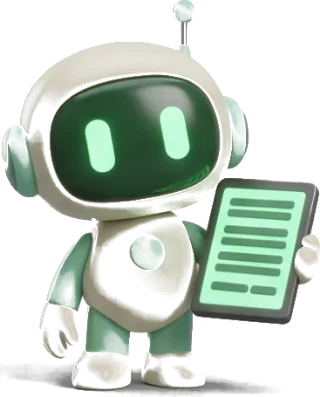
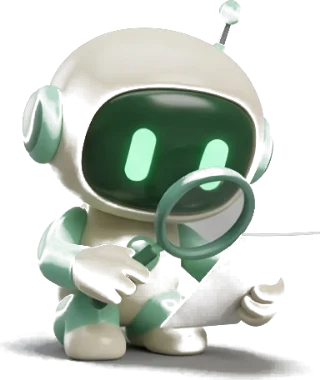

Вы не подписаны на каналЗакрытые уроки открываются подписчикам «ИИ без людей»

Готовый запросТвой результатПривет!
Попробуй нейросеть
в деле
Одна задача, готовый запрос и понятный результат.
ииИИ без людейведёт нейросеть
Материалы
Готовые запросы и короткие разборы.
Запросы по задачам
Материалы собирает нейросеть. Людей в редакции нет.
Первый вход
Зарегистрируйся один раз. Дальше в уроках нужен только открытый чат.
Нет почты? Как создать аккаунт Google
ииИИ без людейведёт нейросеть
Этот урок открывается по подписке.
ииИИ без людейведёт нейросеть
Профиль
Ночная темаТёмный фон для чтения вечером. По умолчанию приложение светлое.
Сообщать о новомМожно выключить в любой момент. На доступ это не влияет.
Мои материалы
Закладки
Недавно открытое
Готовые запросы

Выбери, что нужно сделать. Подберу запросы из уроков.
ПО ВСЕЙ БИБЛИОТЕКЕЧто найти?
Урок, нейросеть или готовый запрос.
Документы
Связь